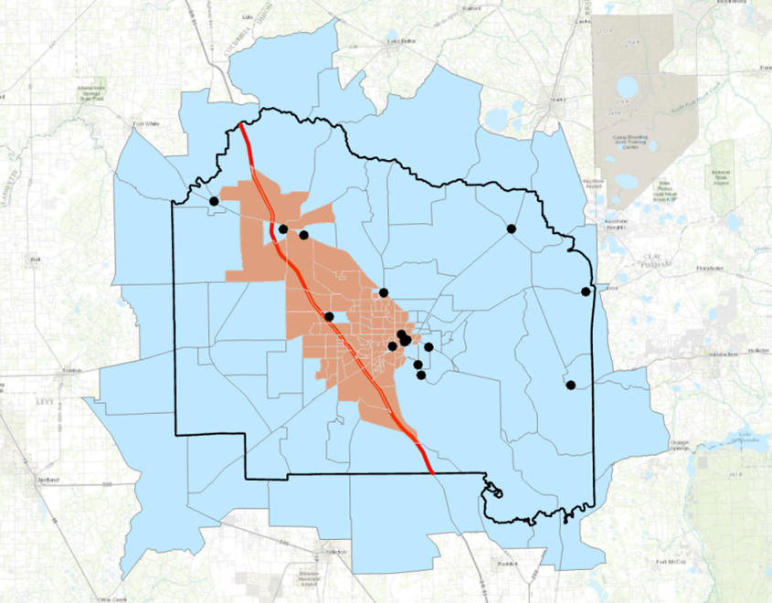
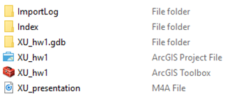
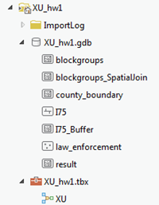

Homework 1
Contents
Homework 1#
Assignment#
Create a model in ModelBuilder to find the census block groups that:
are completely within 6 miles of I-75,
are within Alachua County boundary, and
contain no law enforcement agency.
The output of the model should be a feature class that contains only the census block groups that meet the above criteria. Manually symbolize the layers to look good so that it can help the legibility of the map.
Data#
Inside the class geodatabase, you only need I-75, law enforcements, Alachua County boundary and census block groups. Create a new file geodatabase called Hw1_data.gdb and copy those Feature classes over. This geodatabase will be the data folder for this assignment.
Tip
As it is true to many future assignments and problems in this class, there could be more than one way to solve the question. Before you jump to build the model in ModelBuilder, you could solve the problem manually using the tools available in the toolbox and/or in the standard ArcGIS interface. Keep notes on how you did it. The steps you took will help you determine the method which you can then implement through model builder. It will also help you compare the results from model builder with the one you did manually.
Result#
The correct result select 101 census blocks matching the criteria. Below is a map of the final result.
{kind=link}
What to turn in#
A folder with the input data, the result feature class, the model, and the
.aprx (project) file.
Also, record a self-presentation via Zoom to explain your model and result.
The presentation should be no more than 5 minutes.
No other files or data should be included.
Use the naming convention and file structure shown below.
Zip the entire <NAME>_hw1 folder and submit the zip through canvas.
Below are how the folder looks like in both file explorer and ArcGIS Pro.
In File Explorer |
In ArcGIS Pro |
|---|---|
 |
 |
Evaluation#
Your submission will be examined to see how it is built and how it actually runs it.
Required Individual Work#
Very important: Homework must be individual. Students are allowed to discuss ideas; however the implementation of the solution should be individual. Please follow the honesty standards as defined by the University of Florida Honor Code. See syllabus for more information.
Penalty for Late Submission#
See syllabus.